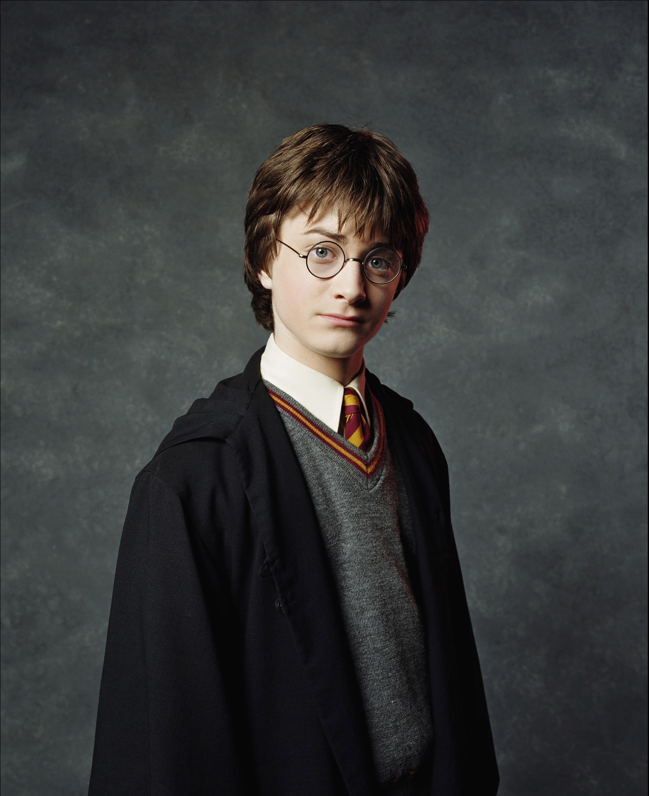
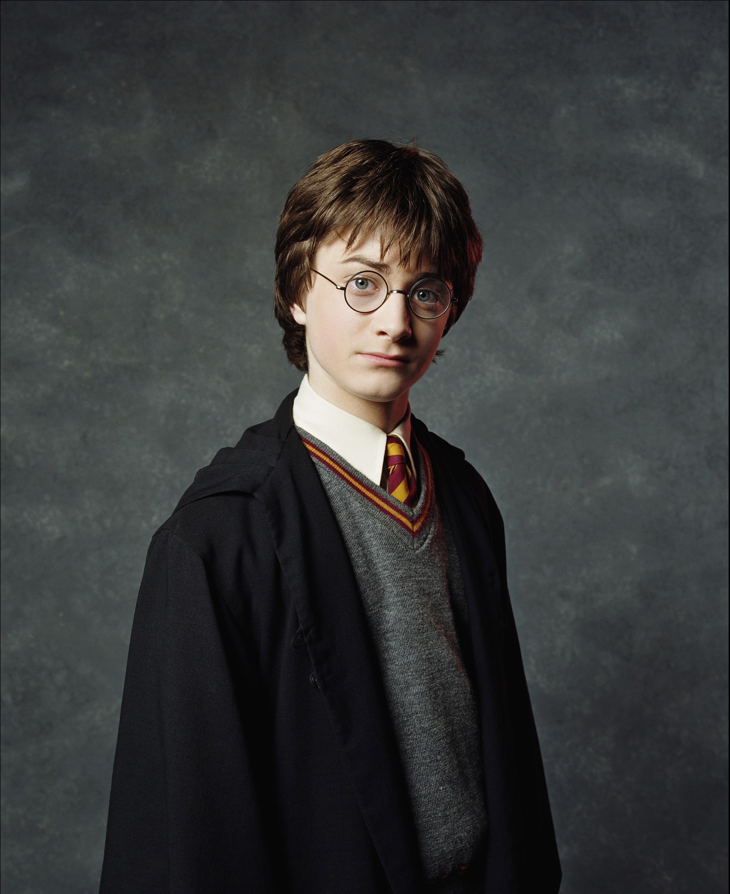
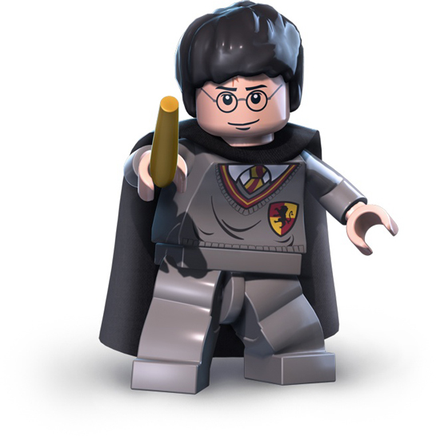

¡Harry Potter!
 

Nombre de los personajes principales
- Harry Potter. Harry James Potter (n. el 31 de julio de 1980), es un mago de sangre mestiza y el único hijo de James y Lily Potter. Es la única persona conocida que ha sobrevivido a la maldición de Avada Kedavra, haciéndolo en dos ocasiones. Ambas veces la maldición fue conjurada por Lord Voldemort.
- Ron Weasley. Ronald "Ron" Bilius Weasley (n. 1 de marzo de 1980) es un mago sangre pura, el sexto y más joven hijo de Arthur y Molly Weasley. También era el hermano menor de Bill, Charlie, Percy, Fred y George, y el hermano mayor de Ginny. Ron y su familia vivían en la Madriguera, en las afueras de Ottery St. Catchpole.
- Hermione Granger. Hermione Jean Granger (n. 19 de septiembre de 1979) es una bruja hija de muggles. El Sr. y Sra. Granger son dentistas en el mundo muggle. A los once años descubrió su don mágico y fue aceptada en el Colegio Hogwarts de Magia y Hechicería. Hermione empezó sus estudios mágicos el 1 de septiembre de 1991, poco antes de cumplir doce años y fue seleccionada para la Casa Gryffindor. Posee una mente académica brillante, y demostró ser una estudiante superdotada.
Nombre de los libros
- Harry Potter y la piedra filosofal
- Harry Potter y la cámara secreta
- Harry Potter y el prisionero de Azkaban
- Harry Potter y el caliz de fuego
- Harry Potter y la Orden del Fénix
- Harry Potter y el misterio del príncipe
- Harry Potter y la reliquias de la Muerte
Castillo de Hogwarts
- El Castillo de Hogwarts es un edificio mágico con muchas torres y torretas, construido hace más de mil años por un mago arquitecto. Es el hogar del Colegio Hogwarts de Magia y Hechicería. Está rodeada por todo tipo de encantamientos con tal de que los muggles no lo descubran: si alguno se acerca al castillo, lo único que verá será unas ruinas enmohecidas con una señal de aviso por no ser segura. Hogwarts está construido en una zona forestal junto a las orillas del Lago Negro. El castillo se encuentra en Escocia, cerca de la aldea de Hogsmeade. La arquitectura del castillo siempre está cambiando, una característica aportada por la fundadora de Hogwarts Rowena Ravenclaw.
Casas de Hogwarts
- Gryffindor. Se caracteriza por su valentía, coraje, determinación y caballerosidad. Los miembros de esta casa son conocidos por su disposición para enfrentar desafíos, proteger a los más vulnerables y luchar por lo que creen que es justo. El emblema de Gryffindor es un león, un símbolo de coraje y fuerza. Los colores distintivos de esta casa son el rojo y el dorado, que representan la pasión y la valentía.
- Slytherin. valora la astucia, la ambición, el ingenio y el liderazgo. Los slytherins son conocidos por su determinación para alcanzar el éxito y su habilidad para sacar provecho de las situaciones a su favor. El emblema de Slytherin es una serpiente, un símbolo de astucia y sabiduría. Los colores distintivos de esta casa son el verde y la plata, que representan la ambición y el ingenio.
- Hufflepuff. Valora la lealtad, la amistad, la honestidad y el trabajo duro. Los hufflepuffs son conocidos por su generosidad y su disposición a ayudar a los demás sin esperar reconocimiento. El emblema de Hufflepuff es un tejón, un animal asociado con la resistencia y la tenacidad. Los colores de esta casa son el amarillo y el negro, que simbolizan el brillo y la estabilidad.
- Ravenclaw. Valora la sabiduría, la inteligencia, la creatividad y la curiosidad intelectual. Los ravenclaws son conocidos por su amor por el conocimiento y su búsqueda constante de respuestas. El emblema de Ravenclaw es un águila, un símbolo de perspicacia y agudeza mental. Los colores de esta casa son el azul y el plata, que representan la sabiduría y la originalidad.
Fundadores de las Casas
- Godric Gryffindor, valoraba la valentía y la nobleza de espíritu. Buscaba alumnos valientes y decididos que estuvieran dispuestos a enfrentarse a las adversidades con honor y gallardía.
- Salazar Slytherin, valoraba la pureza de la sangre y buscaba alumnos con linajes mágicos distinguidos. Sin embargo, no todos los slytherins comparten esas creencias y muchos han demostrado cualidades admirables.
- Helga Hufflepuff, buscaba acoger a todos los estudiantes sin importar su origen o habilidades mágicas. Valoraba la igualdad y creía en la importancia de la amistad y la solidaridad.
- Rowena Ravenclaw, valoraba la inteligencia y la sed de conocimiento. Buscaba estudiantes con habilidades mentales excepcionales y promovía el aprendizaje como un camino hacia el crecimiento personal.
Principales profesores de Hogwarts
- Albus Dumbledore: El director de Hogwarts en la mayoría de la serie y también profesor de Transformaciones en el pasado.
- Severus Snape: Profesor de Pociones y más tarde, director de Hogwarts.
- Minerva McGonagall: Profesora de Transformaciones y directora de la casa Gryffindor. Más tarde, se convierte en directora interina de Hogwarts.
- Rubeus Hagrid: Profesor de Cuidado de Criaturas Mágicas.
- Remus Lupin: Profesor de Defensa Contra las Artes Oscuras en el tercer libro y película, "Harry Potter y el Prisionero de Azkaban".
Haz clic en esta imagen. Encontrarás la página oficial de Harry Potter.
